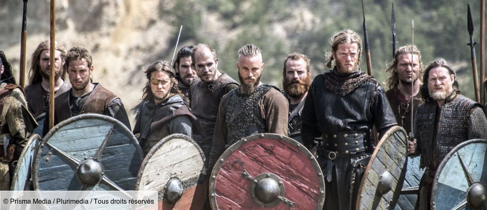

Mes séries Préférées
Naruto

Black Mirror est une anthologie télévisée britannique, créée par Charlie Brooker. Le titre « Black Mirror » fait référence aux écrans omniprésents qui nous renvoient notre reflet. Sous un angle noir et souvent satirique, la série envisage un futur proche, voire immédiat. Elle interroge les conséquences inattendues que pourraient avoir les nouvelles technologies, et comment ces dernières influent sur la nature humaine de ses utilisateurs et inversement2.
Vikings
Vikings est une série télévisée canado-irlandaise créée par Michael Hirst.Scandinavie, à la fin du 8ème siècle. Ragnar Lodbrok, un jeune guerrier viking, est avide d'aventures et de nouvelles conquêtes. Lassé des pillages sur les terres de l'Est, il se met en tête d'explorer l'Ouest par la mer.